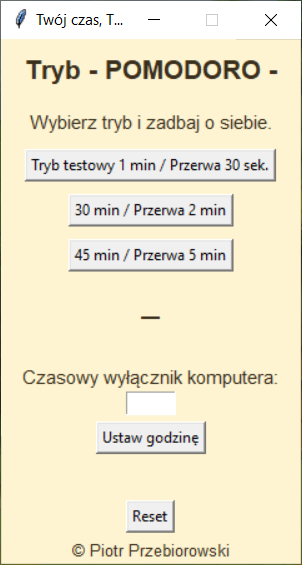

✨ Twój czas, Twoje zdrowie
Aplikacja desktopowa stworzona z troską o zdrowie, koncentrację i spokój użytkownika.
Łączy technikę Pomodoro z pięknym, minimalistycznym interfejsem i delikatnymi dźwiękami.
Zaprojektowana do działania offline – wspiera codzienny rytm pracy i odpoczynku.

✨ Główne funkcje
⏳ Tryb Pomodoro
- Wybór trybu pracy:
- 🔹 Testowy (60 sek. pracy + 30 sek. przerwy)
- 🔹 30 minut pracy + 2 minuty przerwy
- 🔹 45 minut pracy + 5 minut przerwy
- Automatyczne przechodzenie pomiędzy sesjami pracy i przerwy
🌙 Okno przerwy
- Niezależne okienko z animowanym ruchem po ekranie
- Zachęta do mrugania, rozciągania i oderwania wzroku
- Możliwość pominięcia przerwy po 15 sek.
🕒 Czasowy wyłącznik komputera
- Wpisz godzinę (format
HH:MM) – komputer automatycznie się wyłączy
- Powiadomienia z godziną planowanego wyłączenia
- Przycisk Reset do anulowania ustawień
🎧 Powiadomienia dźwiękowe
- Subtelne dźwięki
.wav:
- „Dzwonek przerwy” (start odpoczynku)
- „Powiew Mgiełki” (powrót do pracy)
- Możliwość włączenia/wyłączenia dźwięków
🌍 Obsługa wielu języków
- Język wybierany z rozwijanego menu
- Treści dynamicznie wczytywane z plików
lang_*.json
🖼️ Lekki interfejs graficzny
- Piaskowe tło
#fef4d1 i ciemnobrązowe czcionki
- Rozmiar: 180×310 px (intro), 240×420 px (główne okno)
- Brak belki systemowej + funkcja przesuwania okna
📦 Struktura plików (rekomendowana)
twój_czas_twoje_zdrowie/
├── twoj_czas_twoje_zdrowie_RESOURCE_READY.py
├── README.md
├── LICENSE
├── lang/
│ ├── lang_pl.json
│ ├── lang_en.json
│ ├── lang_de.json
│ └── lang_fr.json
└── sounds/
├── dzwonek_przerwy.wav
└── powrot_do_pracy.wav
⬇️ Pobierz aplikację (EXE)